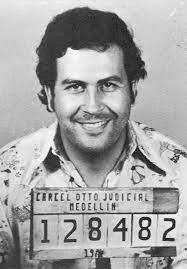

| |
la disputa entre dos familias rivales termina con la muerte en ambas, por lo que Ashmed debe abandonar el país. En el vuelo conoce a una bella pasajera, y a casualidad hace que se vuelvan a encontrar al llegar a la ciudad de destino.
|
Esta pelicula cuenta con 113 minutos de duracion. |
|  |
Pablo Escobar el patrón del mal resumen
Esta producción nos acerca a la vida del narco desde sus orígenes, como hijo de la profesora de un pueblo cercano a Medellín, |
La serie de producción colombiana Pablo Escobar: El Patrón del Mal cuenta con un total de 74 episodios en Netflix |
|
Corazón indomable es una telenovela mexicana
producida por Nathalie Lartilleux Nicaud para Televisa. |
La serie de producción colombiana cuenta con 161 capitulos. |